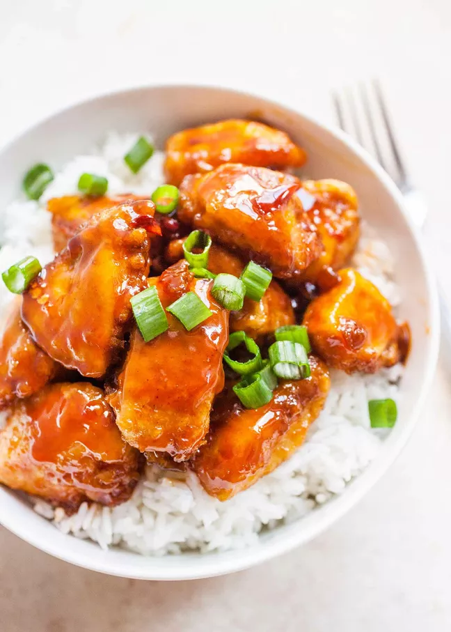

Firecracker Chicken
What is firecracker chicken?
Sweet and spicy Firecracker Chicken is a Chinese takeout staple! Make it at home in less time it takes to order and have it delivered.
Firecracker chicken is lightly fried on the stovetop and then baked with a simple spicy sauce, which is typically made with a mix of buffalo sauce, brown sugar, and apple cider vinegar.
Firecracker Chicken
PREP TIME - 5 mins
COOK TIME - 45 mins
TOTAL TIME - 50 mins
- cup buffalo sauce, like Frank's
- 3/4 cup brown sugar
- teaspoons apple cider vinegar
- 1/4 teaspoon salt
- 1/4 teaspoon red pepper flakes
- 2/3 cup cornstarch
- 1 teaspoon salt
- 1 teaspoon black pepper
- 1 1/2 pounds boneless skinless chicken breasts or thighs, cut into 1-inch cubes
- 3 large eggs
- 1/2 cup vegetable oil
- Cooked rice
- Fresh scallions, just the green ends, chopped
Method
- Preheat the oven to 400°F and prep the sauce:
- Prep the chicken:
- Fry the chicken on the stovetop:
- Sauce the chicken:
- Bake the chicken:
- Serve:
Stir together the sauce ingredients in a medium bowl and set aside.

In a bowl or large plastic bag, combine the cornstarch, salt, and pepper. Add chicken and toss to coat well.
Whisk together the eggs in a medium mixing bowl. Line a plate with paper towels. Arrange everything near your stove.

In a large, deep skillet or wok, warm the vegetable oil over medium-high heat until a flick of water sizzles on contact.
As soon as the oil is hot, transfer the coated chicken to the bowl with the eggs and toss to coat well. Scoop out the chicken pieces with a slotted spoon, allowing any excess egg to drain off, and transfer the chicken to the skillet in an even layer.
Cook for about 3 minutes per side until a crust forms and the chicken is a light tan color. The chicken will not be cooked through at this point.

When chicken is done, remove it from the skillet with a slotted spoon and transfer it to the plate lined with paper towels to drain off any excess oil.
Transfer to a 9x13 baking dish. Add sauce and toss to combine.

Bake chicken for 25 to 30 minutes, stirring halfway through to ensure even cooking. When the chicken is done, it should be cooked through and the sauce will thicken and turn into a glaze coating the chicken.
Serve chicken with cooked rice garnished with scallions.